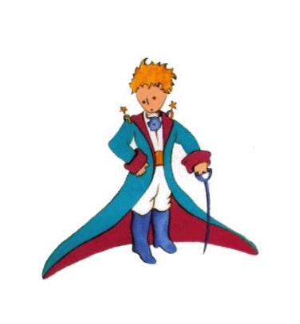
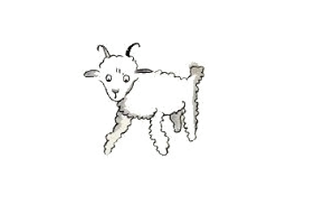
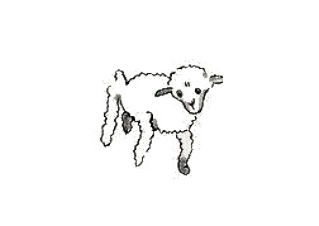
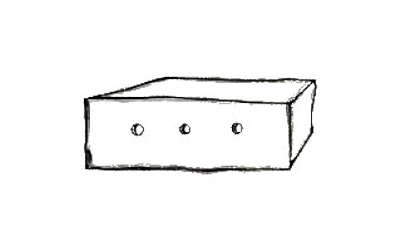

2
Do yo restat sol sin alquí con qui yo vell har vermen posset conversar til yo havet un panne ante six annus in li deserte Sahara. It esset un defecte del motor. E proque yo ni havet un mecanico ni un passageto che me, yo comensat totmen sol li desfacil reparatura. It esset por me un question pri vive e morte. Yo havet aqua por trincar por apen ott dies. Do yo ha indormit in li unesim vésper in li sand, mill milies distant de omni habitat region. Yo esset plu abandonat quam un naufrageant person sur un flottuore in li medie del ocean. Pro to vu posse imaginar mi surprise quande un strangi voce avigilat me in li aurora.

"Ples ... dessiner me un agne!"
"Qualmen, ples?"
"Dessine me un agne ... "
Yo saltat sur mi pedes, quam un fúlmine vell har tuchat me. Yo ha frottat mi ocules e yo regardat exactmen. Tande yo videt un litt, tre ínusual homette, qui regardat a me seriosimen.
Ci es li max bon portrete, que yo posset far plu tard de il.
It ne es mi culpa. Yo esset ejectet del grand homes in li etá de six annus ex mi cariera quam pictor e yo hat aprendet dessiner nequó altri quam cludet e apert gigant-serpentes.
Do yo regardat con grand e astonat ocules al aparation. Ne oblivia que yo esset milles de milies distant de chascun habitat region. Anc it semblat a me que li homette ni ha perdit li via, ni que il esset presc mort pro fatiga, fame o timore. It totmen ne fat li impression de un perdit infante in li medie del deserte, mill miles de chascun habitat region. Quande yo finalmen posset parlar, yo dit a il:
"Ma .... quo tu fa ci?"
Tande il repetit it tre suavimen quam it vell esser un tre seriosi cose:
"Ples ... dessiner me un agne ... "
Quande li secrete es tro impressiv on ne audacia resister. Tant absurd it semblat a me – mill milies distant de chascun homan habitation e in mortal dangere – yo extraet ex mi tasca un folie de papere e un fontan-plum. Pos to yo memorat me que yo hat studiat inter omnicos geografie, historie, calcular e grammatica e yo dit malhumorat que yo ne posse dessiner. Il respondet:
"To fa nequó. Dessine me un agne."
Proque yo nequande hat dessinat un agne, yo fat por il un del unic du dessines, queles yo esset capabil realisar. Ti del cludet gigant-serpente. E yo esset tre astonat quande yo audit li mannette dir:
"No! No! Yo ne vole un elefant in un gigant-serpente. Un gigant-serpente es tre dangerosi e un elefant besona mult loc. Che mi in hem es poc loc. Yo besona un agne. Dessina me un agne."
Do yo ha dessinat.

Li homettee spectat atentivmen, tande il dit:
"No. Ti es ja tre malad. Fa un altri."
Yo dessinat.

Mi amico subridet gentilmen e con indulgentie:
"Tu certmen vide ... to ne es un agne, to es un agno. It have cornes.. "
Dunc yo fat mi dessine ancor unvez.

Ma it esset refusat sam quam li precedentes:
"To es ja tro old. Yo vole un agne, quel vive longmen."
Yo perdit li patientie, it esset vermen témpor perconstructer mi motor, pro to yo dessinachat ti dessine e grunir in plu:

"To es li bux. Li agne, quel tu vole, es intra it."
E yo esset tre surprisat quande li facie del mi yun criticard brilliat subitmen:
"To es totmen talmen, qualmen yo ha desirat it. Esque tu opine que ti agne besona mult herbe?"
"Pro quo?"
"Pro que omnicos che me in hem es tre litt ..."
"It va certmen suficer. Yo ha donat a te un litt agne."
Il inclinat li cap súper li dessine;
"Ne tant litt quam ... Ma vide! It es indormit ... "
Talmen yo fat li conossentie del litt prince.